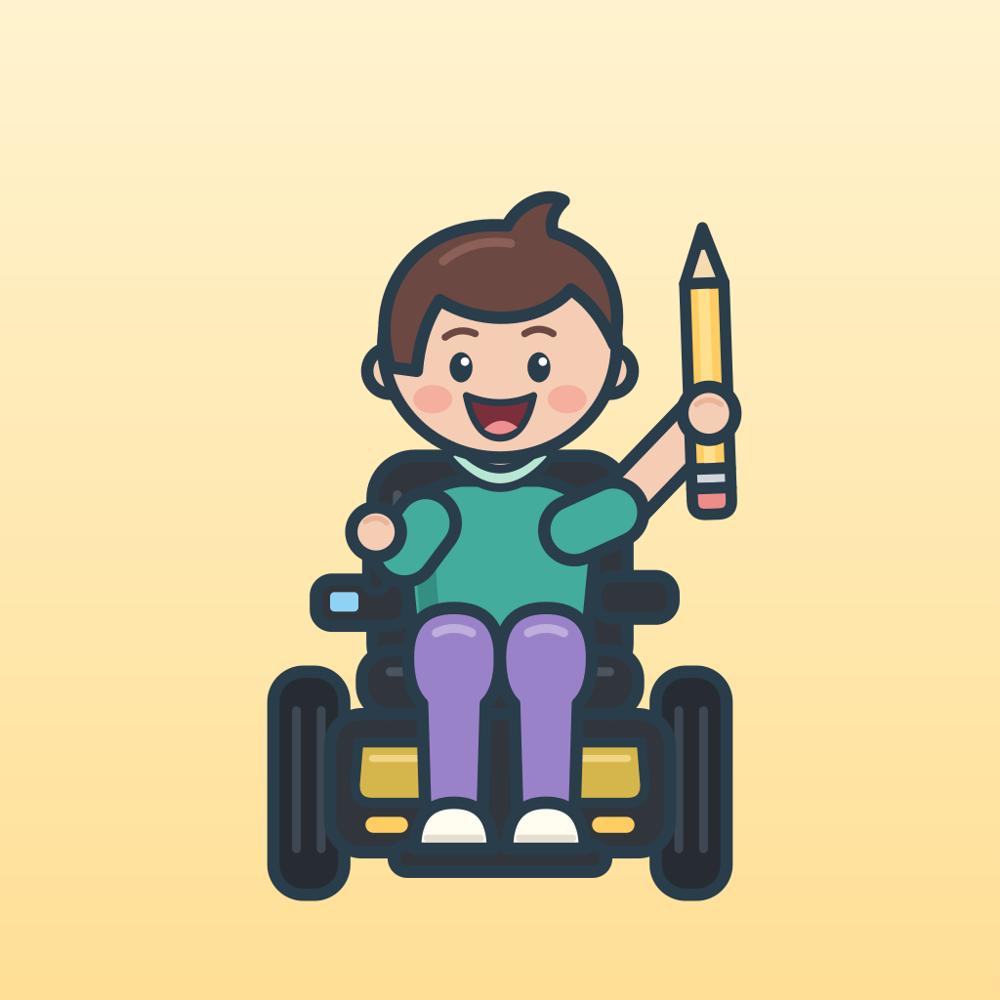

Color
Un petit atelier de dessin pour les enfants, sur Mac, iPhone, iPad et Android : le pinceau, les formes, les tampons, le texte, la gomme, le pot de peinture, des pages à colorier, et le film de ton dessin qui se refait tout seul. Gratuit, sans publicité, sans compte, sans Internet.
Aide
Dans Color, le bouton « ? » explique chaque outil. Les options de l’adulte — l’interface plus ou moins simple, les sons, l’impression, l’accessibilité — sont derrière la roue dentée ; un calcul peut en garder l’entrée.
Une question, un problème ?
Écris à l’auteur en ouvrant une demande sur la page du code de Color : github.com/alejandrosml/Color/issues.
Confidentialité
Color ne collecte aucune donnée : la politique de confidentialité.
Le code
Color est un logiciel libre sous licence MIT, créé par Alejandro San Martin Lamas. Son code est publié sur github.com/alejandrosml/Color.